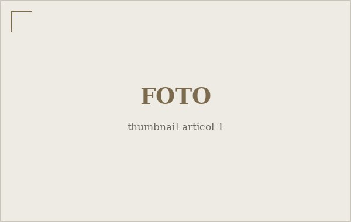

De ce am decis să scriu
Am amânat ani la rând momentul ăsta. Iată, în câteva rânduri, ce m-a făcut în cele din urmă să încep.

Multă vreme am crezut că a scrie public e ceva ce fac doar oamenii care au deja ceva important de spus. Cu timpul am înțeles că lucrurile stau exact invers: scrii ca să afli ce ai de spus, nu pentru că ai aflat deja. Gândul care rămâne în cap se învârte la nesfârșit; gândul pus pe hârtie se așază și începe, în sfârșit, să prindă o formă.
Acest blog nu are o temă unică și nici nu îmi propun să fie o autoritate în vreun domeniu. E mai degrabă un caiet ținut la vedere — un loc în care strâng observații, mici reportaje și întrebări pe care nu reușesc să le închei singur.
Ce vei găsi aici
Texte scurte despre orașul în care trăiesc, despre cărți și conversații care m-au pus pe gânduri, și uneori câte un reportaj despre oameni pe lângă care trecem fără să-i vedem. Nu promit un ritm fix. Promit, în schimb, că nu voi publica nimic doar ca să umplu un spațiu.
Scrii ca să afli ce ai de spus, nu pentru că ai aflat deja.
O invitație
Dacă ceva din ce citești aici îți stârnește o idee, o obiecție sau pur și simplu o amintire, scrie-mi. Cele mai bune texte de pe acest blog vor porni, sunt convins, din conversațiile pe care le voi avea cu cei care îl citesc.
Deocamdată, mulțumesc că ai ajuns până aici. E un început.